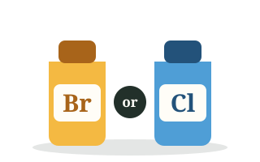

Guides / TubTender
Bromine vs chlorine for a hot tub
Choose bromine if you want a level that holds steadily in hot water with a floater and less smell; choose chlorine if you want the cheaper, faster option and do not mind dosing after each soak. Both keep a hot tub clean when the level is right: bromine 4 to 8 ppm or free chlorine 3 to 10 ppm, with pH at 7.2 to 7.8. Never mix the two products or put them in the same feeder, and drain the tub before changing from one to the other.

Bromine and chlorine side by side
The levels are the ranges in CDC hot tub guidance, which the free hot tub calculator and the TubTender app also use.
| Bromine | Chlorine | |
|---|---|---|
| Level to keep | 4 to 8 ppm | 3 to 10 ppm free chlorine |
| In hot water | More stable, holds between tests | Works fast, fades sooner |
| In sunlight | Breaks down faster | Breaks down, but slower than bromine |
| Smell | Mild | Stronger, mostly from used up chlorine |
| Cost | Usually more | Usually less |
| Daily work | Keep a floater filled, shock to refresh | Dose by hand, often after each soak |
| After a refill | Build a bromide reserve first | Dose and go |
Skin reactions vary. Some people find one gentler than the other, but pH out of range bothers skin with either.
Which one should you use?
- Bromine suits a tub that stays hot, has its cover on and is used most days, or anyone who would rather fill a floater than dose by hand.
- Chlorine suits a tub in the open sun, occasional use, frequent refills or a tight budget.
- Check the manual first. Some covers, heaters and salt systems are made for one of them, and the warranty may say so.
- If someone has had a reaction to pool water, ask a doctor before choosing. Bromine is not a cure for a chlorine allergy.
How each one works day to day
Chlorine acts on its own. You add granules or bleach, test, and add more as it is used up. Used up chlorine is what smells. See how much chlorine to add to a hot tub for amounts by tub size.
Bromine works from a reserve. After a fill you add sodium bromide as its label says, then keep tablets in a floater. When the reading falls, a chlorine based shock turns the used bromide in the water back into bromine. That is why a small dose goes a long way: 1 ppm of chlorine makes about 2.25 ppm of bromine. A zero reading just after a refill usually means the reserve has not been added yet.
Using shock to refresh a bromine tub is normal. Mixing the dry products is not: never put bromine and chlorine in the same container, scoop or feeder.
How much shock raises bromine
To raise bromine by 3 ppm, for example from 2 to 5 ppm, in a tub that already has its bromide reserve. Worked out with the formula in the TubTender engine, for 56 percent dichlor and 6 percent bleach. Use one or the other, not both.
| Tub size | Dichlor (56%) | or bleach (6%) |
|---|---|---|
| 250 gallons | about ½ tsp | about 0.7 fl oz |
| 300 gallons | a little over ½ tsp | about 0.8 fl oz |
| 400 gallons | about ¾ tsp | about 1.1 fl oz |
| 500 gallons | about 1 tsp | about 1.4 fl oz |
Dichlor adds stabilizer (cyanuric acid). CDC recommends not using products that contain it in hot tubs (CDC home hot tub page), so plain unscented bleach is the choice that follows CDC. Products vary; enter the strength on your label in the calculator.
How to switch from one to the other
- Drain the tub. Bromide stays in the water, so chlorine added to it just makes more bromine.
- Clean the shell, rinse or replace the filter, and use a new floater if the old one held the other product.
- Refill and balance alkalinity first, then pH, then calcium.
- For bromine, add the bromide reserve as its label says, then shock. For chlorine, add the first dose.
- Run the jets with the cover open for 20 minutes, test, and soak once the level and pH are in range.
- Store the old product away from the new one, dry and sealed.
Common mistakes
- Adding trichlor pool tablets to a hot tub floater. They are very acidic and look much like bromine tablets.
- Reading a bromine tub on the chlorine scale. Use the bromine colors on the strip.
- Relying on tablets alone. They hold a level; shock brings a low one back quickly.
- Going by smell. Test two or three times a week at least; CDC advises twice a day. See how often to test hot tub water.
Let the app do the math
TubTender is an iPhone app from Graysmith Labs that works with bromine and chlorine tubs. Tap the colors on your strip, scan the labels of the chemicals you own, and it lists how much of each to add for your tub size, in order. Bromine tubs get shock doses and a floater reminder.
TubTender is on the App Store for iPhone. The free hot tub calculator on this site runs the same engine in your browser.
What to keep on hand
Any brand works. Buy for the sanitizer you picked and check the label.
- Bromine tub: bromine tablets, a floater and sodium bromide for refills.
- Chlorine tub: spa chlorine granules or plain unscented bleach.
- Both: test strips that read your sanitizer.
As an Amazon Associate, Graysmith Labs earns from qualifying purchases. The links search Amazon for each product type; none of them changes how much to add.
Questions
Is bromine or chlorine better for a hot tub?
Bromine is steadier in hot water and smells less. Chlorine costs less, works faster and lasts better in sun. Either is fine if you keep it in range.
Can I switch from chlorine to bromine without draining?
Drain first. Swim University gives the same advice: drain, clean and refill before adding the new sanitizer. Going from bromine to chlorine always needs it, because bromide stays in the water.
Can you use chlorine shock in a bromine hot tub?
Yes. A chlorine based shock turns used bromide back into bromine. Follow the label, and never mix the dry products together.
What level should bromine be in a hot tub?
4 to 8 ppm, with pH 7.2 to 7.8. Chlorine should be 3 to 10 ppm. TubTender aims for 5 ppm bromine.
Is bromine better for sensitive skin?
Some people find it gentler, but reactions vary and pH out of range irritates skin with either. Ask a doctor if you have had a reaction.